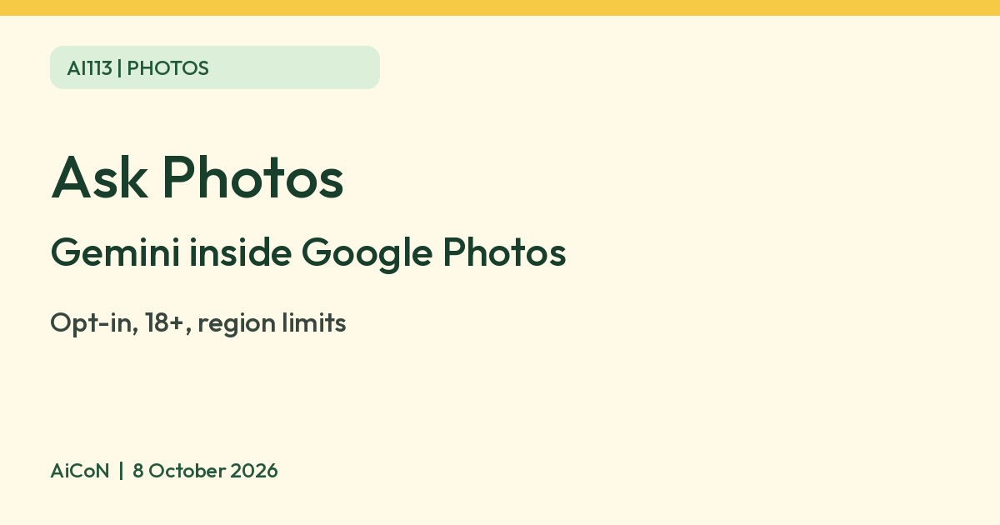

Ask Photos: ask Google Photos questions, with limits
Ask Photos is an experimental Gemini feature in Google Photos that lets you search your library, ask questions and make edits by describing what you want. It is opt-in, for users 18 or older in launched regions. Google does not list India as launched on the help pages we read.

What it is
Ask Photos is an experimental feature in Google Photos, powered by Gemini. Instead of keyword search, you ask in plain language about your photos and albums, and you can describe edits you want. Google says it is experimental and may give unexpected or inaccurate results. When you opt in, the Search tab is renamed to Ask.
Who can use it
Google's help says Ask Photos is rolling out to a select number of countries and regions and is not available everywhere. To use Gemini features in Photos, Google's privacy hub says you must be 18 or older, be an eligible user in a launched location, have Face Groups turned on and have chosen which face is yours, and have location estimates enabled.
The help pages we read do not list which countries are launched, so we cannot confirm India. If you do not have access, Google says you can keep using classic Search.
How to opt in
- Open Google Photos on Android or iPhone.
- Tap Search and follow the prompt, if you see it.
- Or tap your profile picture, then Photos settings, then Preferences, then Gemini features in Photos, and turn on Ask Photos.
Google says that if you cannot opt in by either route, you may not be eligible yet.
Privacy notes
| What it uses | Photos and videos in your library, face group labels and names, and information in your Google Account. Google says it may infer things such as the age and locations of your top face groups. |
|---|---|
| Remember List | You can ask it to remember facts. You can view and delete each saved fact in the Gemini features in Photos setting. |
| Ads and training | Google says your Photos data is never used for ads and is not used to train generative AI models outside Google Photos. There is a separate rule when you connect Photos to another Google service: that service's policies apply, and Google may train on summaries, inferences or generated media based on the library, though not directly on the library's imagery and audio. |
| Human review | Google says humans do not review responses unless you give feedback or in rare abuse cases. Queries may be reviewed to improve Photos after privacy steps are applied, and you can opt out of query donation. |
| Feedback | If you send feedback, it can include your conversation transcript and a list of the photos studied, with details such as time, place and faces. It does not include the photo pixels unless you attach a screenshot. |
Limits to know
- It is experimental, so double-check answers and edits.
- It works with face and location data. Decide if you are comfortable with that before you opt in.
- Google's pages do not give a price for Ask Photos, and we quote none.
Frequently asked questions
Is it available in India?
Not confirmed. Google lists only "select countries and regions". Check your Google Photos settings.
Is it free?
Google's pages do not state a price, so we do not claim it is free.
Can I turn it off?
Google says you opt in, and the toggle is in Photos settings under Gemini features in Photos. If you do not opt in, classic Search stays the default.
Is it accurate?
Google calls it experimental and says it may give inaccurate answers.
Sources: Google Photos Help: Ask Photos, Gemini features in Photos privacy hub. Checked 8 October 2026.